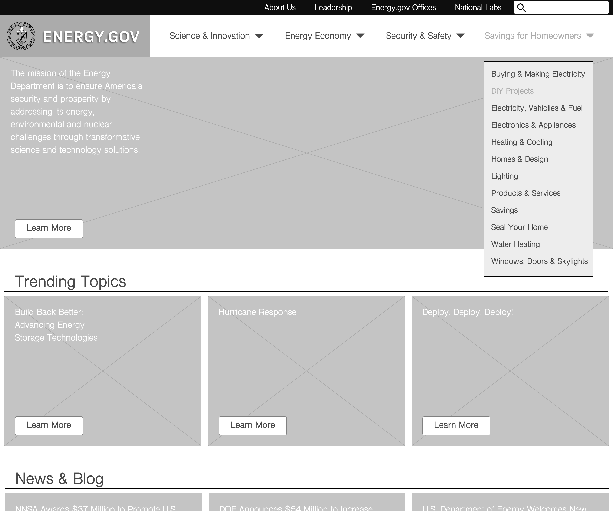
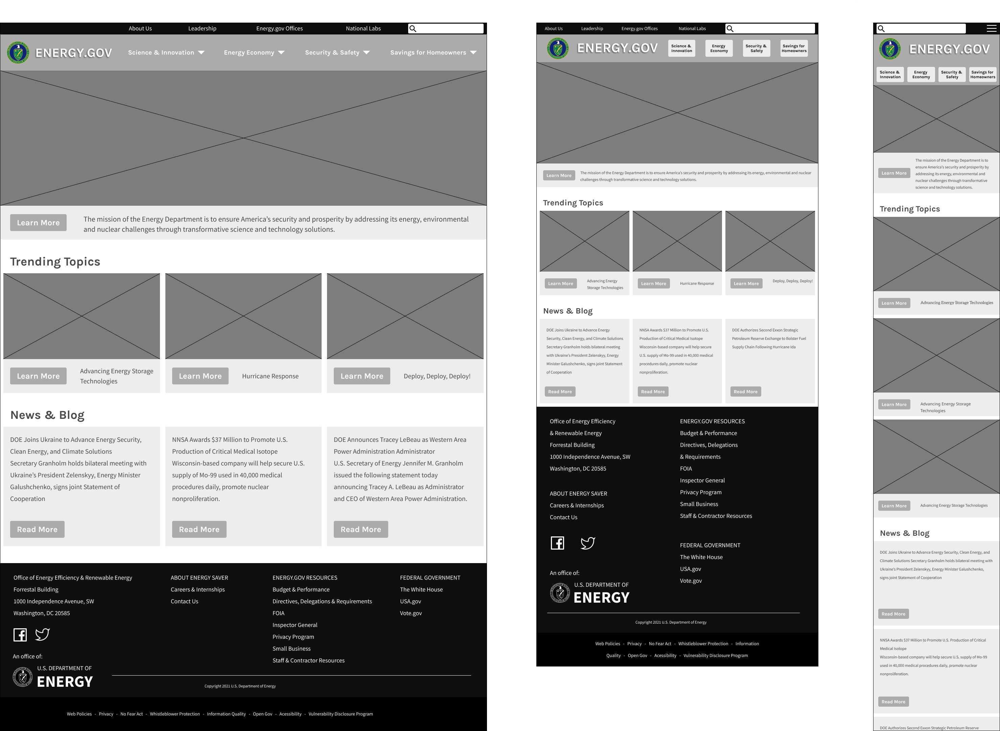
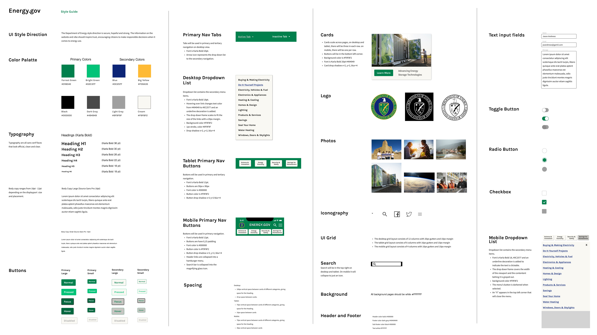

Responsive Web Design Case Study
UX/UI Designer
The Problem
Homeowners who want to save money and help the environment need a way to learn about money-saving programs and home improvement projects that will reduce their carbon footprint and energy expenses. The information and resources should be easy to find on Energy.gov, but they're not.
The Solution
A redesign of the Energy Saver portion of the Energy.gov website to make it easy to use on all devices. I spent four weeks creating a web experience that is more understandable and accessible to the user.
The User
Homeowners who are concerned about their budget; adults looking to save money on their electricity bill while reducing their impact on the planet.
The Goal
To find the opportunities for improvement in the website and ideate on a solution, to uncover data-driven ways to improve the user experience on desktop, tablet, and mobile devices.
The Process
Empathize / User Research
I created this proto-persona based on my assumptions of the target user and audience for the Energy Saver portion of Energy.gov. I was interested in the kind of person who would have the desire and wherewithal to make their home more energy efficient:
.png "Proto-Persona")
I redlined three user flows that I thought my proto-persona might take on Energy.gov:
- Researching the tax incentives she would get for making her home more energy efficient
- Finding information on how to “go solar”
- Finding DIY instructions on how to insulate her water heater tank
I completed a 42 point heuristic evaluation on the current site and the majority of my findings showed that the navigation was overly complicated. I also analyzed the color contrast on the page and found accessibility issues with the Home link and some headings that had blown out pictures behind them.
Define
Using the original site, I conducted usability testing on 3 user paths with 5 users. I discovered that 100% of the participants were confused by the navigation of this website. Most of the usability problems that I discovered had to do with navigation and the naming of menus and links. Participants could not find their way around. I prioritized the findings on a 2x2 matrix that mapped out the problems that were of high value to the user and the government agency. Here are the top issues to fix:
- Incorrect naming.
- Link names don't match page names.
- Inconsistent navigation behavior.
- There is no mission statement or tag line on the Home page letting the user know that they were in the right place.
Ideation
I did a card sorting exercise on the 4th primary navigation tab, which is the Energy Saver portion of the site. Originally this portion of the site had 36 links spread over 4 layers of navigation menus - to say it was confusing would be an understatement. I sorted these links into categories and created 12 links that will go in the primary navigation. This secondary navigation can remain consistent, adding one click but drastically reducing confusion for the user by always allowing them to go back to the last menu. I named the link for this section “Savings for Homeowners.” I sorted all of the secondary and tertiary links in alphabetical order according to the latch principles.
The Department of Energy has an incredibly complex website. This sitemap only represents part of it. For example, the site has 3 different footer sections and 2 different header sections - I only covered the ones displayed when the user is on the Energy Saver portion of the site.
Prototyping
Using the results of my card sorting exercise, I built a prototype to test the navigation, focusing on the Energy Saver portion of Energy.gov, which I am calling Savings for Homeowners. I added a menu for this portion of the site and created a header and footer. The only change here is that “About Us” has been moved from the secondary menu to the header. On mobile, the header menu items are inside of a hamburger menu. I built wireframes of the Home page, showing primary and secondary navigation for both desktop and mobile so that I could do some usability testing on the new navigation.
I created a style tile with a color palette, logo, iconography, images, button states, typography and more. I will use this as a starting point to transform my wireframes into a more hi-fi mockup as I move forward.
Usability Testing
I conducted 4 usability tests on my first prototype and took notes. I wanted to find out if the new information architecture was easier to navigate. Here are my findings:
- The new navigation is much easier to use - 100% success!
- The text on cards should be under pictures for better readability.
Based on the results of my usability tests, I iterated on the wireframes and designed a tablet version as well as desktop and mobile.
I created a hi-fi prototype for mobile and desktop and conducted 4 usability tests over Zoom. 100% of the participants were able to easily complete the task. When testing the original site, the same task was only able to be completed by 20% of the users.

My usability tests validated my solution to the navigation problems and gave me some additional insights. Here are the changes that I made:
- H1 color changed from blue to black.
- Added more margin between cards.
- Made whole card clickable instead of just the button.
- Made carrots smaller in the navigation.
I created a style guide with 23 sections, explaining all of the elements used to make the high-fidelity mockup for this redesign.
I applied the styles from the style guide to my wireframes which created high-fidelity clickable prototypes for mobile and desktop.
Conclusion
This project was challenging because of the amount of pages on the site. The original navigation was poorly laid out and the user would get lost. I redesigned it so that the primary navigation is persistent and I rearranged the menus so that the secondary navigation led the user to their desired information with a visible way back. I clearly labeled the Home page sections and removed unnecessary content making the user experience much simpler.
If I were to continue my research and design process on this project, I would like to conduct an A/B test to see if the primary menu would be more convenient to use if it were on the bottom when viewed on a mobile phone. My hypothesis is that this would be easier for the user to reach with their thumb and it would make the user experience feel like a mobile application.